ℹ️ Antes de empezar
La Calculadora CaVeSal® tiene 6 pestañas en el encabezado — 📋 Ficha prenatal, 📊 Resultado, 🗓️ Gestograma·Parto, 🔊 Ecografía, 👤 Pacientes e ℹ️ Acerca — y este manual está organizado en ese mismo orden: cada parte de abajo corresponde a una pestaña real de la app, y cada sub-sección a una tarjeta (o subpestaña) que vive adentro de ella.
Dentro de cada pestaña, las tarjetas funcionan por secciones colapsables: tocá el encabezado de cada una para abrirla, cargá los datos disponibles, y el resultado se actualiza automáticamente a medida que escribís — no hace falta ningún botón de "Calcular" para los cálculos individuales. El botón "⚡ Calcular" del encabezado (visible en todas las pestañas) es el que arma el informe consolidado de riesgo prenatal integral (pestaña 📊 Resultado), reuniendo todos los hallazgos de todas las pestañas.
Todos los cálculos se hacen en tu propio dispositivo, sin conexión a internet ni envío de datos a servidores externos.
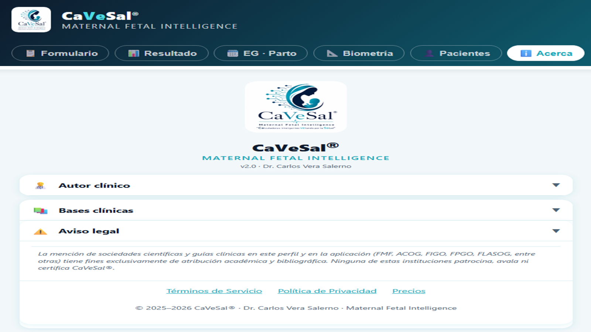
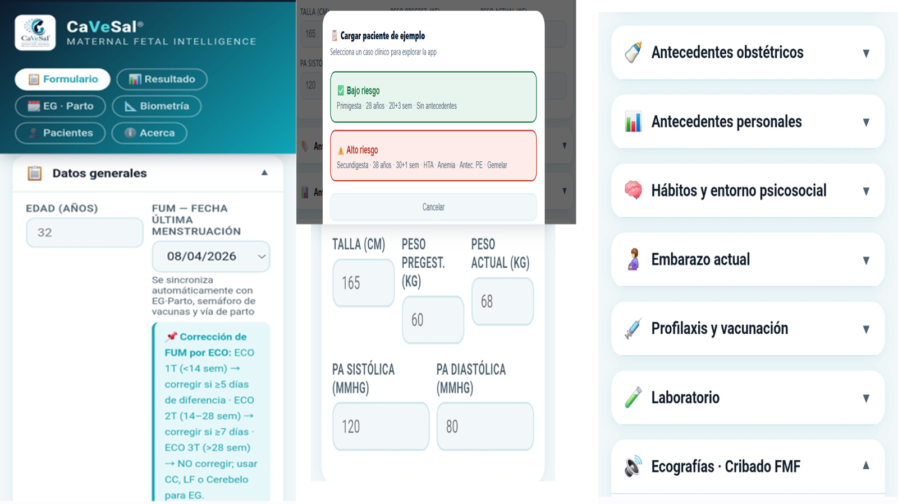
📋 Ficha prenatal
Lo que se carga al abrir una paciente: datos generales, antecedentes, hábitos, embarazo actual, profilaxis, laboratorio y metabolismo. Es la base de la que se nutre todo el resto de la calculadora.
📋 Datos generales
Cargá edad materna, FUM, talla, peso pregestacional y actual. La FUM se sincroniza automáticamente con la pestaña 🗓️ Gestograma·Parto, el semáforo de vacunas y la vía de parto — no hace falta repetirla en otro lado.
Si cargás una ecografía precoz en Gestograma·Parto, esta tarjeta recibe la corrección automáticamente. Criterios de corrección: 1T (<14 sem) ≥5 días de diferencia · 2T (14–28 sem) ≥7 días · 3T (>28 sem) no se corrige la FUM.
Cargá PA sistólica y diastólica. Si ingresás algún valor, la app despliega automáticamente los campos ampliados de HTA: proteinuria (negativa / trazas / ≥1+ tira reactiva / IPC >0.3 / ≥300mg/24h / ≥2g/24h rango nefrótico) y síntomas de vasospasmo (cefalea severa/frontal, acúfenos, fosfenos/escotomas, epigastralgia/dolor HCD, disnea/edema pulmonar).
🍼 Antecedentes obstétricos y personales
Antecedentes obstétricos
Cargá gestas, partos, cesáreas, abortos y el período intergenésico (meses) — con esto la app arma automáticamente la fórmula obstétrica (G/P/C/A) que después vas a ver repetida en la ficha de "Mis pacientes".
Marcá los antecedentes obstétricos de riesgo: preeclampsia previa, diabetes gestacional previa, parto pretérmino previo, RCIU previo, macrosomía previa (>4000g), muerte fetal previa, malformación fetal previa, HPP previa, isoinmunización previa, incompetencia cervical previa, depresión postparto previa, cirugía uterina previa.
Antecedentes personales
Cardiovascular/metabólico: HTA crónica, diabetes pregestacional, enfermedad renal crónica, obesidad pregestacional (IMC≥30), asma moderada/grave. Si marcás Cardiopatía, se despliega un sub-bloque para precisar tipo (congénita CIA/CIV/Fallot/otra, valvular, miocardiopatía, arritmia) y la clasificación OMS de riesgo cardiovascular en el embarazo (I a IV, con IV = contraindicado el embarazo).
Tiroides: hipotiroidismo en tratamiento, hipotiroidismo sin tratamiento/Anti-TPO+, hipertiroidismo/Graves (Anti-TRAb+).
Coagulopatías y trombosis: trombofilia hereditaria, SAF (criterios de Sapporo), TVP previa, TEP previo, trombocitopenia/púrpura, Von Willebrand/hemofilia portadora.
Neurológico/inmunológico: epilepsia, polimorfismo MTHFR documentado, enfermedad autoinmune (LES, AR, Sjögren, esclerodermia), salud mental (depresión/ansiedad/trastorno bipolar).
Oncológico: cáncer previo en remisión (con tipo: mama, cérvix, tiroides, hematológico, melanoma, otro) y, por separado, cáncer activo durante el embarazo (con tipo y tratamiento en curso).
Infecciosas (antecedente): VIH en TAR, hepatitis B crónica (HBsAg+), hepatitis C (Anti-VHC+), sífilis (antecedente/en tratamiento).
🧠 Hábitos y entorno psicosocial
Marcá lo que corresponda: tabaquismo activo, consumo de alcohol, consumo de drogas, violencia doméstica, vulnerabilidad socioeconómica, dieta vegetariana/vegana. Cada uno se integra al informe de riesgo integral con su propia conducta sugerida (ej. dieta vegetariana/vegana ajusta la suplementación recomendada).
🤰 Embarazo actual
Marcá los hallazgos del embarazo en curso: embarazo múltiple, reproducción asistida (TRA), sangrado vaginal, Rh negativa, Coombs indirecto/PAI positivo, SGB positivo (35–37 sem), placenta previa, polihidramnios, oligohidramnios, amenaza de parto pretérmino, cérvix corto (<25mm), movimientos fetales disminuidos, altura uterina discordante, ITU sintomática, vaginosis/vaginitis.
Si marcaste reproducción asistida (TRA), la app lo señala como hallazgo de riesgo (mayor riesgo de placenta previa, preeclampsia y gemelar) — esto se repite automáticamente también en la ficha de "Mis pacientes".
Patología activa del embarazo (marcar solo si la paciente ya llega con diagnóstico establecido en este embarazo): preeclampsia en curso, hipertensión gestacional, diabetes gestacional ya diagnosticada, RCIU confirmada por biometría, colestasis intrahepática (CIE), hiperémesis gravídica/vómitos incoercibles, síndrome HELLP, DPPNI.
💉 Profilaxis y vacunación
Ref: CDC · OMS · ACOG · FIGO 2024 · Comité Nacional de Inmunización
Marcá las vacunas ya aplicadas (Tdpa, antigripal, VSR, COVID-19, Hepatitis B) con su fecha y edad gestacional, y si corresponde, si iniciaste ácido fólico (este último se agrupa junto con las vacunas bajo el dominio "Profilaxis" del informe).
La app indica el estado del esquema y qué queda pendiente según la EG actual, con la conducta específica de cada una:
🔹 Antigripal: vacuna inactivada, segura en cualquier trimestre. Prioridad en cardiopatía, diabetes, asma, obesidad, inmunosupresión, VIH. Nunca usar vacuna de virus vivos atenuados (LAIV) en el embarazo.
🔹 COVID-19: vacunas ARNm (Pfizer/Moderna) recomendadas por OMS, CDC, ACOG y FIGO. Seguras en cualquier trimestre — las embarazadas tienen mayor riesgo de COVID grave. Refuerzo si pasaron >6 meses desde la última dosis.
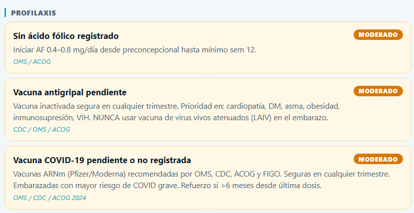
🧪 Laboratorio
Ref: OMS · ACOG · ISSHP · Endocrine Society 2024 · CDC · ETMI Plus 2024/OPS
Módulo extenso, organizado en sub-áreas. Cargá solo los valores que tengas disponibles — cada uno se interpreta de forma independiente.
🩸 Hemograma y coagulación
Hemoglobina: anemia si <11 g/dL en 1T o <10.5 g/dL en 2T-3T (OMS). Plaquetas: normal 150–400 (×10³/mL), <150 = trombocitopenia. TP/RIN (normal en embarazo 0.8–1.2) y KPTT (normal 25–40 seg). También podés marcar proteinuria positiva y urocultivo positivo como hallazgos.
🫘 Perfil renal
Creatinina (normal en embarazo <0.8 mg/dL), ácido úrico (normal <5.5 mg/dL — marcador precoz de PE si elevado junto con HTA), urea (normal 10–40 mg/dL).
🫀 Perfil hepático
TGO/AST y TGP/ALT (normal <40 UI/L, sospecha si >70), LDH (>600 UI/L = criterio de HELLP), bilirrubina total (normal <1.2, sospecha colestasis), fosfatasa alcalina (normal hasta 3× LSN por origen placentario). La app combina automáticamente: TGO/LDH elevadas + trombocitopenia = criterio de HELLP, con conducta de hospitalización inmediata, maduración pulmonar si <34 sem, y finalización individualizada.
🍔 Perfil lipídico
Colesterol total (aumenta fisiológicamente en embarazo), triglicéridos (>400 mg/dL = riesgo de pancreatitis), HDL, LDL.
🔬 Serología TORCH
Toxoplasmosis (IgG/IgM/avidez IgG — clave: IgG+ en 1T = inmune, no repetir; IgG− = susceptible, repetir cada trimestre; IgM+ = solicitar test de avidez), Rubeola (IgG/IgM), CMV (IgG/IgM/avidez IgG).
🧬 Vitamina D, Ferritina y Saturación de transferrina
Vitamina D sérica: solicitar en obesidad, piel oscura, poca exposición solar, o vegetarianas (déficit <20, insuficiencia 20–29, óptimo ≥30 — Endocrine Society 2024). Ferritina: solicitar en sospecha de anemia ferropénica (déficit <15, bajo 15–30, normal >30). Saturación de transferrina: normal 16–45%, <16% = déficit funcional de hierro.
🦋 Tiroides
Cargá TSH junto con el trimestre del análisis — la app aplica el valor de referencia correspondiente (1T: 0.1–2.5 µUI/mL · 2T: 0.2–3.0 µUI/mL · 3T: 0.3–3.5 µUI/mL), más T4 libre (normal 0.8–1.8 ng/dL) y anti-TPO (>35 UI/mL = positivo).
🦠 Estreptococo grupo B (SGB) e ITS/Serología infecciosa
SGB: cribado obligatorio a las 35–37 semanas (cultivo vaginal+perianal). Si es positivo, la app indica profilaxis intraparto obligatoria (penicilina G, o clindamicina según antibiograma si hay alergia).
Hepatitis B (HBsAg/anti-HBs/HBeAg — HBsAg+ implica inmunoprofilaxis neonatal obligatoria en las primeras 12h, y si la carga viral es >200.000 UI/mL se agrega tenofovir desde semana 28), VIH (test rápido/ELISA + Western Blot de confirmación — un test rápido reactivo no es diagnóstico definitivo, amerita infectología urgente sin suspender TAR si ya la recibe; con WB confirmado se inicia TAR de inmediato con objetivo de carga viral indetectable al parto), Chagas (requiere 2 técnicas reactivas de principio distinto para confirmar — ELISA + HAI/IFI; con 1 sola técnica reactiva es indeterminado y amerita segunda técnica), y Hepatitis C (anti-VHC, confirmar con ARN-VHC).
Sífilis — la interpretación depende de la combinación de resultados:
🔹 Treponémico reactivo + VDRL aún no disponible: conducta urgente — solicitar VDRL cuantitativo, pero no diferir el tratamiento: iniciar penicilina G ya (esquema de latente tardía/duración desconocida) mientras se obtiene el resultado.
🔹 Treponémico reactivo + VDRL no reactivo: posible cicatriz serológica (tratamiento previo), ventana serológica muy temprana, o falso positivo del test rápido. Si no hay tratamiento documentado, tratar como latente tardía; VDRL de control en 4 semanas; notificar a infectología.
🔹 VDRL reactivo sin treponémico confirmatorio: el VDRL (no treponémico) puede dar falso positivo en embarazo, LES o infecciones virales — requiere confirmación con test treponémico antes de tratar.
Ref: CDC STI Treatment Guidelines 2021 · OPS Eliminación TV 2024 · ETMI Plus 2024 · ACOG
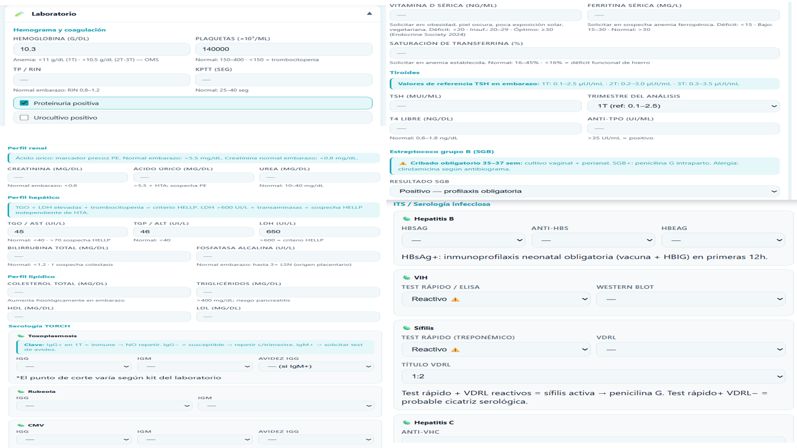
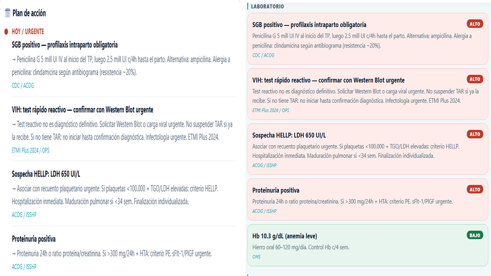
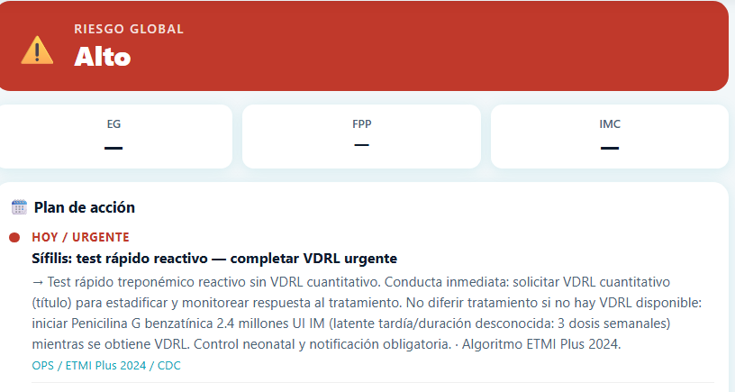
🍬 Metabolismo · Diabetes · Ganancia ponderal
Ref: IADPSG · ALAD · ADA · OMS · IOM/NAS 2009 · ACOG
Es una sola tarjeta en la app, con dos funciones que comparten los datos de talla/peso ya cargados en "Datos generales".
🩸 Diagnóstico de diabetes gestacional (DMG)
Elegí el protocolo a usar: IADPSG/ALAD/ADA (1 paso, 75g) o 2 pasos — desde el selector correspondiente.
Cargá los valores de la curva de glucosa (basal, 1h, 2h según el protocolo elegido).
La app indica si los valores confirman diagnóstico de diabetes gestacional según los puntos de corte del protocolo seleccionado.
⚖️ Ganancia de peso gestacional
Con el peso pregestacional, la talla y el peso actual ya cargados en "Datos generales", la app calcula el IMC pregestacional y ubica a la paciente en su categoría (bajo peso, normal, sobrepeso, obesidad).
Muestra la meta de ganancia total para el embarazo y la tasa semanal recomendada según esa categoría (IOM/NAS 2009), comparándola con la ganancia real hasta el momento.
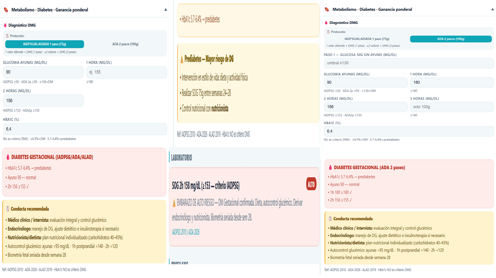
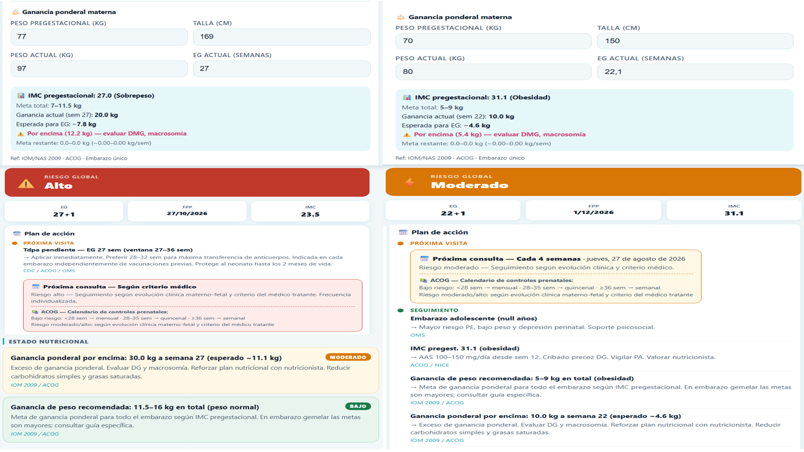
📊 Resultado
El panel de salida. Se arma al tocar "⚡ Calcular" en el encabezado (visible desde cualquier pestaña) y reúne todos los hallazgos de todas las demás pestañas en un solo informe.
🎨 Cómo leer los resultados
Todos los módulos de la Calculadora usan el mismo lenguaje visual, para que interpretar un resultado sea siempre igual de rápido, sin importar qué estés calculando:
Código de color por nivel de riesgo/alerta: 🟢 verde = normal/bajo riesgo · 🟡 amarillo/naranja = moderado, requiere seguimiento más cercano · 🔴 rojo = alto riesgo, requiere acción o derivación.
Cada resultado con hallazgo relevante incluye, en este orden: el valor o dato que disparó la alerta, la interpretación clínica en lenguaje llano, la conducta sugerida (qué hacer, con qué frecuencia, a quién derivar), y la fuente de la que sale la recomendación (FMF, ACOG, NICE, OMS, CLAP, Medicina Fetal Barcelona, etc.).
Cuando el "⚡ Calcular" arma el informe global, agrupa automáticamente estos mismos hallazgos en un "Plan de acción", ordenado por urgencia: primero lo que requiere atención hoy/urgente, después el seguimiento de rutina, con la próxima fecha de consulta sugerida según el nivel de riesgo global.
⚡ Cálculo de riesgo prenatal integral
Es el botón "⚡ Calcular" del encabezado: recorre todo lo que cargaste en 📋 Ficha prenatal, 🗓️ Gestograma·Parto y 🔊 Ecografía, y arma acá, en 📊 Resultado, un informe consolidado con todos los hallazgos relevantes juntos.
La app recorre todos los datos cargados y arma una lista de hallazgos por dominio clínico (Edad materna, Estado nutricional, Antecedente obstétrico, Presión arterial, Ecografía 1T, Cribado cromosómico, Morfología fetal, etc.), cada uno con:
🔹 El dato o valor que disparó la alerta (ej. "IMC pregest. 32.1 — obesidad").
🔹 El nivel de riesgo: bajo, moderado o alto.
🔹 La conducta sugerida (ej. dosis de AAS, frecuencia de controles, estudios adicionales a solicitar).
🔹 La fuente de la recomendación (FMF, ACOG, NICE, OMS, etc.).
Si no hay hallazgos de riesgo en algún dominio, simplemente no aparece en el informe — solo se listan los dominios donde hay algo para señalar.
El informe también arma automáticamente una Suplementación recomendada según el perfil de la paciente: ácido fólico/metilfolato (dosis según población general o riesgo aumentado), hierro (dosis según grado de anemia), calcio (si hay riesgo de PE, con la reducción de riesgo asociada), yodo, y omega-3/DHA — cada uno con su dosis exacta y referencia.
Incluye además dos calendarios de componente básico, marcando qué corresponde a la EG actual (etiquetado "AHORA" / "PERÍODO ACTUAL"), qué ya pasó, y qué falta:
🔹 Calendario de laboratorios: panel de 1T (primera consulta: hemograma, crasis, grupo/Rh, serologías, TSH, glucemia, perfil lipídico, urocultivo, etc.), panel de 2T (24–28 sem: hemograma, SOG 75g, urocultivo, VDRL, VIH, toxoplasmosis si corresponde), y panel de 3T (35–37 sem: hemograma, crasis, perfil renal/hepático, VDRL, VIH, SGB).
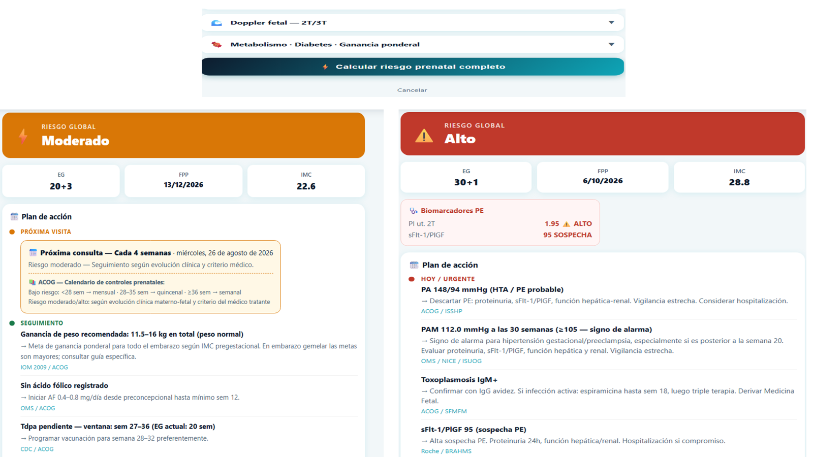
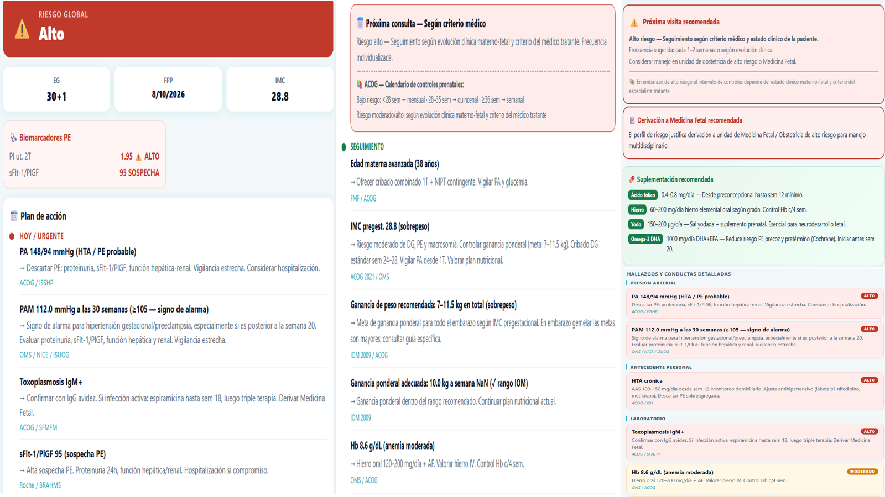
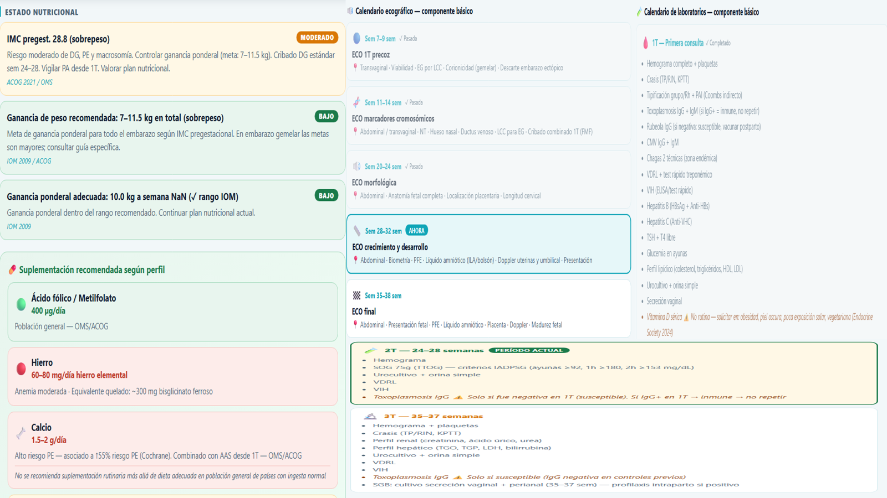
🗓️ Gestograma · Parto
Edad gestacional y calendario, altura uterina, y pronóstico de vía de parto — lo que no es ni ficha ni ecografía, sino el seguimiento cronológico del embarazo.
🗓️ Edad gestacional y calendario (FUM / ECO precoz)
Este módulo es la base de todos los demás — la edad gestacional (EG) que calculás acá se sincroniza automáticamente con el resto de la calculadora.
Elegí el modo: "Por FUM" (fecha de última menstruación) o "Por ECO precoz" si tenés una ecografía temprana con la EG ya determinada.
Modo FUM: cargá la fecha de última menstruación. La app calcula la EG a la fecha de hoy (o a cualquier otra fecha que elijas en "Calcular para fecha").
Modo ECO precoz: cargá la fecha de la ecografía y la EG que arrojó ese estudio (formato semanas+días, ej. "8+3"). La app compara automáticamente esa EG contra la FUM cargada y te indica si corresponde corregir la FUM, según estos criterios:
🟢 1er trimestre (<14 sem): se corrige si la diferencia es ≥5 días.
🟡 2do trimestre (14–28 sem): se corrige si la diferencia es ≥7 días.
🔴 3er trimestre (>28 sem): no se corrige la FUM — para EG dudosa en 3T conviene usar CC, LF o cerebelo como parámetro aislado (ver sección "Doppler ACM — Anemia Fetal y Biometría por parámetro" en la pestaña 🔊 Ecografía).
Con la EG calculada, la app muestra un calendario semana a semana (22 a 42 semanas) con la fecha calendario correspondiente a cada semana de embarazo, marcando el rango de término (37–40 sem) y el postérmino.
También incluye un cálculo inverso: indicá una semana puntual (ej. "36") y la app te dice qué fecha calendario corresponde a esa semana, para esta paciente.
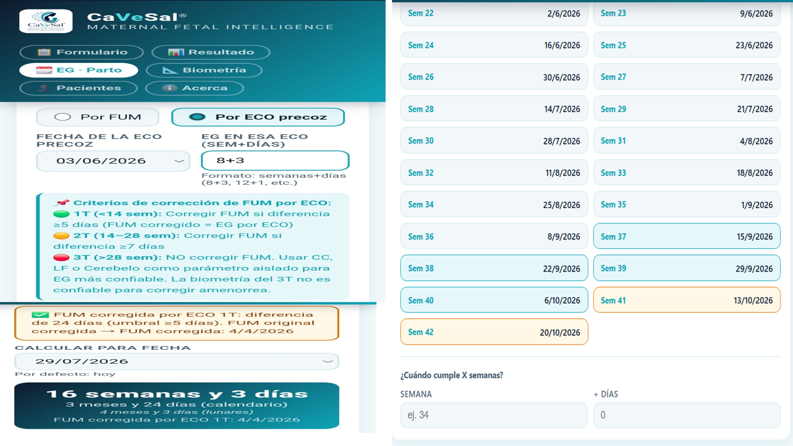
📏 Altura uterina
Ref: Gomes AG 2001 · CLAP-OPS/OMS · fórmula de McDonald (sínfisis-fondo)
Cargá la altura uterina en cm (medida sínfisis-fondo, técnica de McDonald) y la edad gestacional en semanas+días.
La app muestra el percentil (con los valores de referencia P10/P50/P90 para esa EG) y clasifica el resultado: AU normal para EG, AU alta para EG (>P90), o AU baja para EG (<P10) — válido en el rango 20–36 semanas, donde AU(cm)≈EG±2.
Según la clasificación, sugiere qué descartar: AU alta → macrosomía fetal, polihidramnios, gemelar no diagnosticado, miomas uterinos, diabetes gestacional (solicitar ecografía). AU baja → RCIU, oligoamnios, discordancia de EG (ecografía con PFE urgente, valorar Doppler AU/ACM).
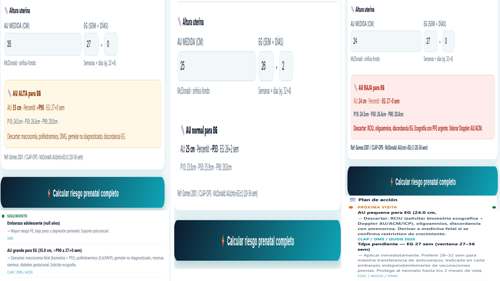
🏥 Pronóstico de vía de parto
Ref: Robson · Grobman (ACOG/NICHD) · Bishop
Cargá paridad y antecedentes (partos vaginales previos, cesáreas previas, abortos espontáneos), talla materna (referencia: <150cm riesgo de desproporción céfalo-pélvica, <145cm pelvis límite), y estado fetal 3T (presentación, encajamiento, EG actual).
La app clasifica automáticamente a la paciente en su Grupo de Robson correspondiente (ej. Grupo 5: cesárea previa + cefálica; Grupo 7: multípara pélvica), con la interpretación de ese grupo.
Si hay cesárea previa, se habilita el Score de Grobman (validado ACOG/NICHD, predice probabilidad de éxito de parto vaginal después de cesárea). Cargá tipo de cicatriz uterina, indicación de la cesárea anterior (recurrente o no), y marcá si hubo parto vaginal previo, trabajo de parto espontáneo previo, pérdida gestacional recurrente, embarazo de alto valor, o cirugía uterina previa.
Según esos datos, la app indica si es "Candidata a PVDC" (parto vaginal después de cesárea) — listando los criterios favorables encontrados — o si corresponde "Cesárea programada indicada", con la justificación específica (ej. PFE ≥4500g, embarazo de alto valor).
Si cargás el examen cervical (dilatación, borramiento, estación, consistencia, posición), la app calcula el Score de Bishop y lo clasifica (favorable/desfavorable), sugiriendo maduración cervical si corresponde.
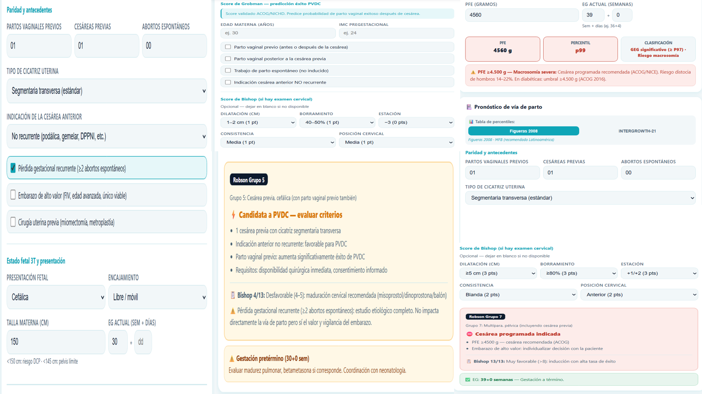
🔊 Ecografía
Todo lo que es estudio ecográfico/Doppler propiamente dicho, en el mismo orden cronológico en que se realizan los estudios: cribado 1T/2T → morfología estructural 2T → Doppler fetal 2T/3T → peso fetal → anemia fetal → bienestar fetal de 3T (PBF, monitoreo).
🔊 Ecografías · Cribado FMF (1T/2T, PE, líquido amniótico)
🆕 Sección ampliadaRef: FMF/Nicolaides · Snijders 1998 · Sharifzadeh 2019 · Medicina Fetal Barcelona · Gyselaers 2020 · Verlohren 2012 · ISUOG 2024 · SMFM Consult #46 (2018) · ACOG Clinical Consensus No.3 (2022) · Roche/BRAHMS sFlt-1/PlGF
Es la primera tarjeta de la pestaña, y la más extensa: reúne todo lo que se evalúa en la ECO 1T y la ECO 2T de cribado — cromosómico, preeclampsia (Doppler materno) y líquido amniótico.
🧬 Cribado cromosómico 1T (FMF/Nicolaides)
Elegí el tipo de cribado disponible para esta paciente: Solo ECO (NT + marcadores, sin bioquímica) · Combinado (ECO + bioquímica: PAPP-A, β-hCG, PlGF 1T) · NIPT primario · Combinado + NIPT. Cada modo despliega sus propios campos.
Solo ECO (11–13+6 sem): elegí la tabla de percentiles de TN (Snijders/FMF 1998 o Sharifzadeh 2019), cargá NT y CRL al momento de la medición (45–84mm), y marcá los marcadores adicionales: hueso nasal (ausente: LR+ ~6 para T21), ductus venoso (onda a invertida/ausente = marcador de aneuploidía + cardiopatía), regurgitación tricuspídea (asociada a T21 y cardiopatía congénita), y plexo coroideo ("signo de la mariposa" — quiste(s) visible(s) es marcador blando, más asociado a T18 que a T21 si está aislado).
Combinado: cargá el riesgo numérico de T21/T18/T13 (1/X) que te dio el software de cribado, y los valores MoM de PAPP-A (<0.4 MoM ↑ riesgo PE/RCIU/aneuploidía), β-hCG libre (>2.5 MoM sugestivo T21, <0.4 MoM sugestivo T18/T13) y PlGF 1T (<0.5 MoM alto riesgo PE, <0.7 moderado).
NIPT: registrá el resultado (normal, T21/T18/T13 positivo, Turner/45,X, Klinefelter/47,XXY, microdeleción, fallo de muestra) — la app recuerda que un NIPT positivo no es diagnóstico y requiere confirmación invasiva.
🩺 Doppler de arterias uterinas y Arteria Oftálmica (cribado PE) — 1T y 2T
Este es el Doppler materno para cribado de preeclampsia y compromiso vascular sistémico — distinto del Doppler fetal (AU, ACM), que tiene su propia tarjeta más abajo.
Arterias uterinas (IP): cargá el IP derecho e izquierdo, tanto en 1T como en 2T — la app calcula automáticamente el IP medio de ambas. Cortes: 1T alerta desde IP ≥1.90 (moderado) y ≥2.35 (alto, >p95) · 2T desde IP ≥1.44 (moderado, p90-95) y ≥1.80 (alto, >p95).
Arteria Oftálmica (AO): cargá el PSV1 y PSV2 — la app calcula el ratio PSV2/PSV1 automáticamente. ≥0.70 zona limítrofe · ≥0.78 alto riesgo de preeclampsia/compromiso vascular (integrar con PI uterinas y PlGF). Se usa igual en 1T (cribado) y 2T/3T (pronóstico en PE/HIE ya instalada).
Cervicometría 2T (mm): <25mm cérvix corto · <15mm muy corto.
sFlt-1/PlGF (2T/3T): cargá el ratio y la EG a la que se hizo el estudio (importa para distinguir el corte 85 vs. 110). Interpretación (Roche/BRAHMS): ≤38 descarta PE en la próxima semana · 38–85 intermedio si <34 sem (38–110 si ≥34 sem) · >85/110 sospecha de PE · >655 PE inminente.
💧 Líquido amniótico
Cargá el bolsón mayor (columna vertical máxima, BME/SDP) y/o el ILA (índice de líquido amniótico), y elegí qué guía usar para clasificar el ILA: ACOG/SMFM 2022 (con zonas borderline) o ISUOG 2024 (cortes absolutos clásicos) — las dos tablas conviven en la app porque no coinciden exactamente entre sí.
📊 ILA — ISUOG 2024: <5cm oligoamnios · 5–24.9cm normal · ≥25cm polihidramnios.
📊 ILA — ACOG/SMFM 2022: <5cm oligoamnios (<3cm oligoamnios severo) · 5.1–8.0cm borderline inferior · 8.1–18cm normal · 18.1–24.9cm borderline superior · 25–29.9cm poli leve · 30–34.9cm poli moderado · ≥35cm poli severo.
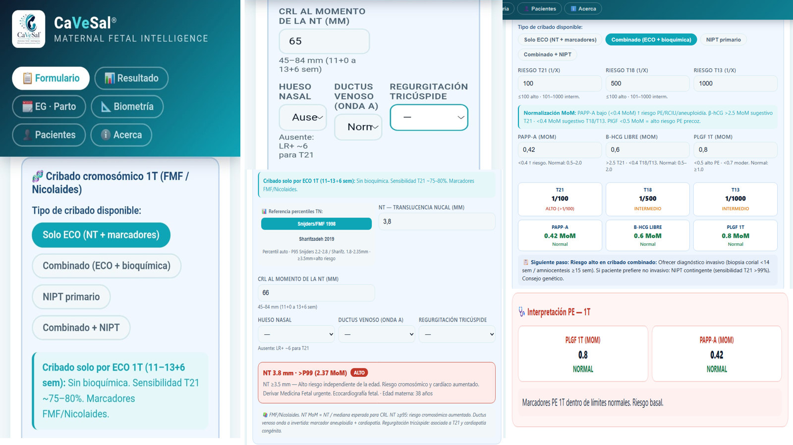
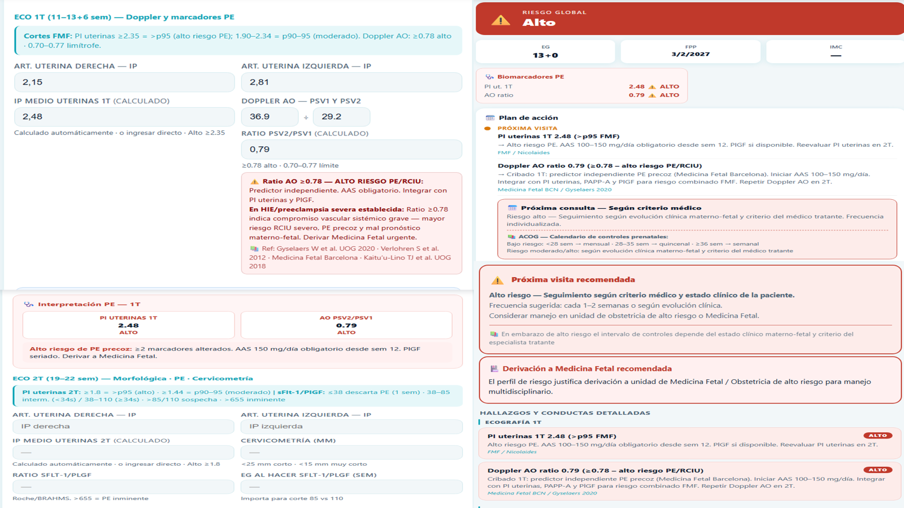
🔬 Ecografía Morfológica (2T) — 7 sistemas
🆕 Sección nuevaRef: ISUOG Practice Guidelines (2020/2023) — fetal CNS, face, heart · Paladini & Volpe (2018) · Jeanty P et al. 1984 · Mayden KL et al. 1982 · Corteville JE et al. 1991/1992 · FMF/Nicolaides · CDHSG / Jani et al. 2007
Checklist estructurado por sistema (18 a 24 semanas), inmediatamente después del cribado FMF — es el mismo control de la ECO 2T, así que esta sección queda contigua a la de arriba en vez de después del Doppler/PFE.
Cargá la EG de este estudio (semanas+días) — es compartida por los 7 sistemas y por el Acretismo placentario, y la usan los ítems con corte dependiente de EG (DTC, pliegue nucal, pelviectasia renal, megavejiga).
🧠 SNC
Cavum del septum pellucidum (ausente ⚠️) · Tálamos (simétricos/asimétricos ⚠️) · Forma craneal (ovalada normal / signo del "limón" ⚠️ / signo de la "fresa" ⚠️) · Continuidad ósea craneal (íntegra/defecto ⚠️).
Atrio ventricular lateral: elegí el esquema de medición (A: 3 niveles clásico — normal <10 · leve 10–12 · moderada 12.1–14.9 · severa ≥15mm; o B: ISUOG 2 niveles — normal <10 · leve 10–15 · severa >15mm) y cargá el valor en mm (medición interna-interna a nivel del glomus del plexo coroideo).
DTC (mm, de referencia — no dispara alerta automática, el corte real es por tabla de percentil p5–p95 por EG) · Signo de la banana (presente ⚠️) · Agenesia de vermis cerebeloso ⚠️ · Cisterna magna (normal 3.0–10.0mm, <2–3mm obliterada, >10mm megacisterna magna) · Pliegue nucal 2T (válido 15.0–20.6 sem, normal <6.0mm, ≥6.0mm marcador mayor de aneuploidía).
😶 Cara
Órbitas (presentes y simétricas / alteradas ⚠️) · Nariz (forma normal / aplanada o ausente ⚠️) · Maxilar (íntegro/defecto ⚠️) · Paladar (íntegro/hendidura ⚠️ — requiere corte coronal retronasal, más difícil de visualizar que el labio) · Labio superior (íntegro/defecto unilateral ⚠️/defecto bilateral ⚠️). Labio y paladar se evalúan juntos: la conducta y el consejo genético varían según la combinación exacta.
Diámetros orbitarios: cargá el DII (diámetro interorbitario interno), el DIO (interorbitario externo/binocular) y, si lo mediste, el DO (diámetro orbitario individual) — todos en mm. La app calcula el ratio DII/DIO (regla de los tercios) y clasifica: >0.40 sospecha de hipertelorismo · <0.25 sospecha de hipotelorismo. El DII también se compara cualitativamente contra el DO como apoyo adicional. Marcá aparte si hay sospecha de microftalmia/anoftalmia (DO pequeño, cristalino rudimentario o ausente) — es un campo independiente del ratio.
🦴 Columna
Columna (corte longitudinal + axial: íntegra/solución de continuidad ⚠️) · Piel sobre la columna (íntegra/defecto ⚠️).
🫀 Tórax y corazón (+ HDC)
Ritmo cardíaco: regular (normal) · taquicardia sostenida (>160 lpm, >10 min) ⚠️ · bradicardia sostenida (<110 lpm) ⚠️ · extrasístole aislada · otra arritmia sostenida (con campo de texto libre para precisar el tipo) — mismos cortes de bpm que usa el Monitoreo Fetal.
Situs víscero-atrial (solitus/inversus ⚠️) · Corte de 4 cámaras · Simetría ventricular y simetría auricular + foramen oval · Septum interventricular (defecto = CIV ⚠️) · Tracto de salida VI y VD · Corte de 3 vasos y tráquea (AP>Ao>VCS en calibre decreciente, confluencia en "V" a la izquierda de la tráquea) · Cayado aórtico (interrupción/coartación ⚠️) · Pulmones (homogéneos y simétricos normal).
Índice cardiotorácico: elegí el método (por área, recomendado — normal 0.25–0.33, cardiomegalia >0.35; o por perímetros/diámetros — corte EG-dependiente: >0.50 a las 12–15 sem · >0.52 a las 18–20 sem · >0.59 a las 25–30 sem) y cargá el valor. Ángulo/eje cardíaco: normal 45°±20° (25°–65°) hacia la izquierda; >65° orienta a cardiopatías conotruncales/HDC, <25° o eje derecho a dextrocardia/situs inversus.
Hernia diafragmática congénita (HDC) — sub-tarjeta propia dentro de Tórax y corazón: burbuja gástrica (infradiafragmática normal / supradiafragmática-intratorácica ⚠️), lado (izquierda/Bochdalek ~85% · derecha ~10–15%), y O/E LHR (%) — <25% severo · 25–44.9% moderado (TOTAL trial; 35–44.9% si hay herniación hepática) · ≥45% favorable.
🫃 Abdomen
Estómago: presente/infradiafragmático/izquierdo (normal) · imagen de "doble burbuja" ⚠️ (atresia duodenal/yeyunal alta, ~30% asociación con T21) · alterado (otro, ver HDC). Pared abdominal/inserción del cordón: íntegra (normal) · onfalocele (con cobertura) ⚠️ · gastrosquisis (sin cobertura) ⚠️.
Pelviectasia renal: diámetro AP de pelvis derecha e izquierda (mm) — <33 sem: normal <4.0 · leve 4.0–10.0 · obstructiva >10.0mm; ≥33 sem: normal <7.0 · leve 7.0–10.0 · obstructiva >10.0mm.
Riñones — visualización y posición: ambos visibles en posición habitual (normal) · ausente unilateral ⚠️ · ausente bilateral ⚠️⚠️ · ectópico pélvico ⚠️. Riñones — aspecto del parénquima: normal/homogéneo · multiquístico/displásico ⚠️ (correlacionar con el líquido amniótico — agenesia bilateral o displasia bilateral suelen cursar con oligo/anhidramnios severo).
Cordón umbilical (vasos): 3 vasos (normal) · arteria umbilical única ⚠️. Megavejiga 2T/3T (≥16 sem) — diámetro longitudinal máximo (mm), criterio estático: patológico si supera (EG en semanas + 12)mm. Ciclo de llenado/vaciado (dinámico): normal 25–45 min · no vacía tras 40–60 min ⚠️. Signo de "ojo de cerradura" (keyhole, VUP): presente ⚠️.
🦵 Extremidades
Fémur acortado para la EG y húmero acortado para la EG (checkboxes). Manos y pies — orientación (normal / alterado ⚠️, otro: contracturas, sindactilia, etc.). Dedos — número (5 por mano/pie normal / polidactilia sospechada ⚠️ — marcador blando asociado a trisomía 13 y síndromes genéticos como Meckel-Gruber o Bardet-Biedl si se acompaña de otros hallazgos; aislada, pronóstico habitualmente bueno).
3 segmentos por extremidad (para no pasar por alto defectos de reducción — focomelia, amelia — cuando solo se mira fémur/húmero aislado): miembro superior → húmero, radio/cúbito, mano (cada uno presente/ausente ⚠️); miembro inferior → fémur, tibia/peroné, pie (presente, orientación normal / ausente ⚠️ / presente con sospecha de pie equino varo (talipes) ⚠️).
🟤 Placenta, cordón, LA, cérvix
Placenta — localización: fúndica/corporal/lateral lejos del OCI (normal) · inserción baja (borde <20mm del OCI) ⚠️ — distinto del checkbox "Placenta previa" de 3T (Ficha prenatal → Embarazo actual), que confirma en 3T lo que acá es un hallazgo de 2T. Cordón — sitio de inserción placentaria: central/paracentral (normal) · marginal ("en raqueta") ⚠️ · velamentosa ⚠️⚠️ (riesgo de vasa previa — confirmar con Doppler color sobre el OCI; cesárea electiva si se confirma; riesgo de RCIU). Es un campo distinto del número de vasos del cordón (ver Abdomen).
img/manual-calc-morfologia-*.png🔴 Acretismo placentario (PAS) — Clasificación CaVeSal
🆕 Sección nuevaRef: FIGO/Jauniaux 2018 · ISUOG/Jauniaux 2016–2018 · ACOG/SMFM Obstetric Care Consensus No.7 (2018/2021) · MSPyBS Paraguay
Espectro de acretismo placentario (PAS: acreta/increta/percreta). Factor de riesgo principal: cesárea previa + placenta previa/inserción baja anterior.
Factores de riesgo: número de cesáreas previas (0/1/2/≥3), legrados uterinos previos, cirugía uterina previa (miomectomía, etc.), antecedente de síndrome de Asherman. La placenta previa/inserción baja y la edad materna >35 o antecedente de FIV no se duplican acá — se toman de los campos de Morfología (2.7) y Antecedentes, donde ya están cargados.
Signos ecográficos 2D (cada uno Sí / Inseguro / No): desaparición de la zona clara, adelgazamiento miometrial (<1mm), lagunas placentarias irregulares ("queso suizo"), interrupción de la interfase/pared vesicouterina, abultamiento placentario (bulging) hacia la vejiga, masa exofítica focal (invasión transerosa).
Signos Doppler color (cada uno Sí / Inseguro / No): hipervascularidad uterovesical, hipervascularidad subplacentaria, vasos puente/comunicantes (bridging vessels), vasos alimentadores de lagunas, afectación de parametrios.
Si ya tenés diagnóstico confirmado (quirúrgico o histopatológico), podés cargar la Clasificación FIGO: Grado 1 (Accreta) · Grado 2 (Increta) · Grado 3a (Percreta limitada a la serosa uterina) · Grado 3b (Percreta con invasión vesical) · Grado 3c (Percreta con invasión de otros tejidos/órganos pélvicos, ± vejiga).
img/manual-calc-acretismo.png🩸 Doppler fetal — 2T/3T (AU, ACM, ICP, ductus venoso, avanzado)
Ref: Baschat AA & Gembruch U. UOG 2003 · Arduini & Rizzo 1990 · Mari NEJM 2000 · ISUOG 2020 · TRUFFLE Study
Doppler básico
Cargá la EG al estudio (semanas+días), y los valores disponibles: Arteria Umbilical (IP, IR), Arteria Cerebral Media (IP, y PSV en cm/s para cribado de anemia), y Ductus Venoso (PIV).
La app calcula automáticamente el ICP = ACM/AU, con su umbral P5 dinámico según la EG (ej. a las 33 semanas, P5≈1.07) y lo marca como alterado si cae por debajo.
El resultado muestra cada parámetro con su percentil individual (AU PI, ACM PI, ICP, DV PIV), señalando cuáles están alterados y qué significan (ej. AU aumentada = resistencia placentaria; ICP alterado = redistribución hemodinámica).
Doppler hemodinámico avanzado
Regurgitación tricuspídea (RT) 2T/3T: marcador de disfunción cardíaca derecha. Indicar si DV alterado o sospecha de cardiomiopatía fetal (no confundir con la RT del 1T, que es cribado cromosómico).
Istmo Aórtico (AoI): cargá IP y flujo diastólico (normal/reducido/ausente/reverso). Refleja redistribución cerebral y postcarga ventricular izquierda — flujo retrógrado indica compromiso neurológico grave. Indicar si ACM o ICP alterados en RCIU pretérmino.
Vena Umbilical Pulsátil (VUP): la pulsatilidad venosa umbilical es signo tardío de descompensación fetal — indica fallo cardíaco con congestión venosa, asociada a mortalidad perinatal elevada.
Si el Doppler avanzado sale alterado y la EG es <34 semanas, la app recuerda la maduración pulmonar (betametasona 12mg IM c/24h x2 dosis, ref. ACOG PB 127/RCOG) y que la finalización se define según evolución clínica y biofísica, coordinando con neonatología.
Arteria Oftálmica — Pronóstico HIE/PE (2T/3T)
En paciente con HIE/preeclampsia ya establecida, cargá PSV1 y PSV2 de arteria oftálmica — el ratio PSV2/PSV1 evalúa el grado de compromiso vascular sistémico: ≥0.78 compromiso grave · 0.70–0.77 limítrofe · <0.70 favorable.
Un ratio ≥0.78 indica mayor riesgo de RCIU severo y PE de inicio precoz, con mal pronóstico materno-fetal — la app recomienda derivar a Medicina Fetal urgente y evaluar sFlt-1/PlGF, función renal/hepática y bienestar fetal.
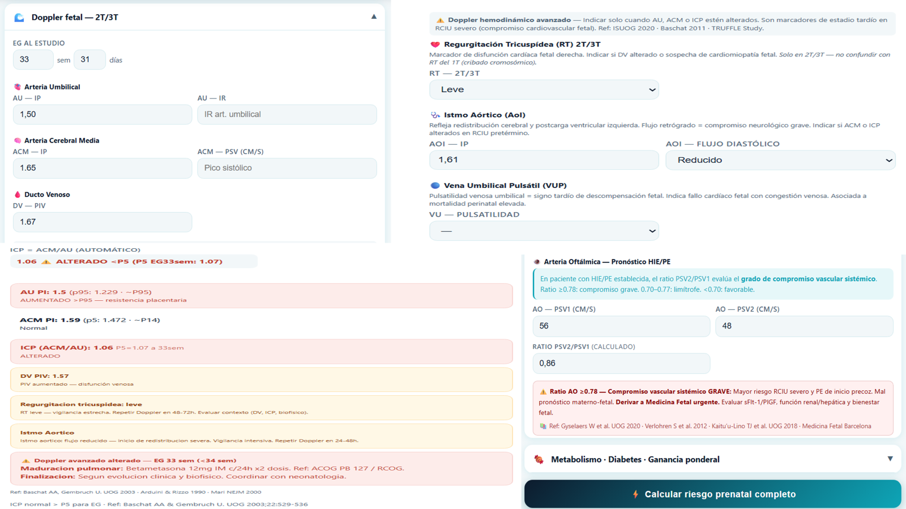
👶 Peso Fetal Estimado (PFE) y crecimiento
Ref: Hadlock 1984 · INTERGROWTH-21 · Figueras 2008 · Protocolo MFB 2024
Elegí el modo de cálculo: peso y percentil directo, peso + edad gestacional, o biometría Hadlock (circunferencia abdominal + longitud femoral).
Cargá los valores según el modo elegido. En el modo "Peso + EG → percentil" vas a ver el aviso "Estimación de percentil por curvas INTERGROWTH-21st (método simplificado). Para resultado preciso usar software FMF" — es una aclaración sobre el método, no significa que ese modo ignore la tabla que tengas seleccionada (ver punto 4).
La app calcula el percentil de peso fetal y lo clasifica: PEG, AEG, GEG, o RCIU según el percentil y — si ya cargaste el Doppler — combinando ambos criterios (ver sección Doppler).
El percentil de los modos "Peso + EG" y "Biometría Hadlock" se calcula con la tabla que tengas elegida en el selector Figueras 2008 / INTERGROWTH-21 — este selector está ubicado en la tarjeta de "Pronóstico de vía de parto" (pestaña 🗓️ Gestograma·Parto), pero aplica a todo el módulo de PFE (ver esa sección para el detalle).
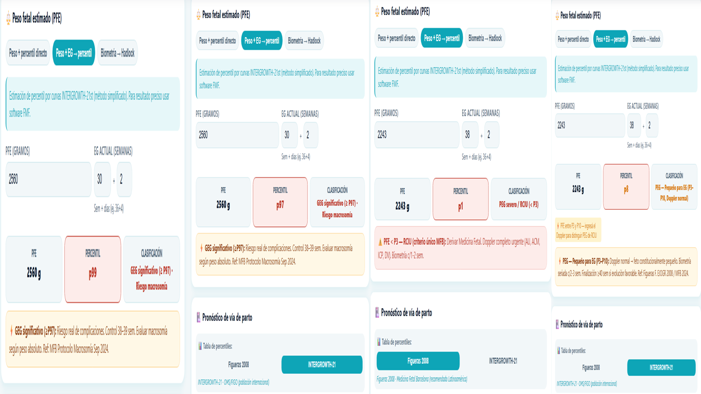
🩸 Doppler ACM — Anemia Fetal y Biometría por parámetro (EG)
Ref: Mari G. et al. NEJM 2000 · Algoritmo propio CaVeSal® · Umbral MoM ≥1.50 · Robinson & Fleming 1975 · Hadlock 1984 · Chitty & Altman 2002 · Goldstein 1987 · Campbell & Thoms 1977
En la app es una sola tarjeta con 5 subpestañas: el cribado de anemia fetal por PSV-ACM, más las distintas formas de estimar la EG por un parámetro biométrico aislado (útil cuando la EG por FUM es dudosa, o en sospecha de RCIU/asimetría).
Anemia fetal (PSV-ACM)
Cargá la EG (semanas+días) y el PSV de ACM en cm/s.
La app calcula el MoM (comparando contra la mediana esperada para esa EG) y clasifica: Normal (MoM <1.29, sin evidencia de anemia, control según protocolo) · Anemia leve posible (MoM 1.29–1.49, vigilancia, repetir en 1–2 semanas) · Anemia moderada-severa (MoM ≥1.50, indicación de cordocentesis y transfusión intrauterina urgente).
🔬 EG por CRL — 1T
Cargá el CRL en mm (rango válido: 10–84mm, aprox. 6+3 a 13+6 semanas). La app calcula la EG con la fórmula EG(días) = 8.052×√(CRL×1.037)+23.73, con margen de error ±5 días — es la medida más precisa para datar el embarazo, y muestra la FUM corregida y la FPP correspondiente.
📏 EG por biometrías — 2T y 3T
Cargá los parámetros disponibles: DBP, CC, CA, LF (en mm) — cada uno calcula su propia EG estimada por separado. Criterio de uso: en 2T usar DBP o LF (margen ±1 semana); en 3T preferir CC o LF (menor variabilidad que DBP); en EG dudosa o discordante en 3T, usar CC o LF para la estimación, sin corrección formal de FUM. Si hay una discordancia significativa entre parámetros (≥7 días), la app alerta y sugiere evaluar asimetría fetal — considerando RCIU asimétrico si la CA es el parámetro rezagado — y recomienda pasar a la subpestaña "Asimetría LF/CA".
🦴 EG por longitud humeral
Cargá la longitud del húmero (mm) como parámetro adicional de EG, útil como alternativa o complemento al fémur, especialmente si hay sospecha de displasia esquelética.
🧠 EG por diámetro transverso del cerebelo (DTC)
Cargá el DTC en mm. Entre las semanas 14–28, el DTC en mm equivale aproximadamente a la EG en semanas (después de sem. 28 la correlación deja de ser lineal, y la app usa las tablas de Goldstein). Ventaja clave: el DTC es independiente de las restricciones de crecimiento — no se afecta en RCIU, por lo que es el parámetro más confiable para estimar EG en fetos con RCIU o asimetría severa. Un DTC conservado en un feto con sospecha de RCIU confirma que la EG asignada es correcta; un DTC pequeño para la EG es marcador de patología del SNC (hipoplasia cerebelosa, síndrome de Dandy-Walker) y amerita derivación.
⚖️ Asimetría LF/CA
Concepto: en RCIU tardío y asimétrico, el feto redistribuye flujo (brain sparing) — el crecimiento abdominal se restringe antes que el cefálico. El ratio LF/CA detecta esta asimetría precozmente. Cargá LF, CA (en mm), y opcionalmente CC (para chequeo de microcefalia: CC <p3 para la EG) y la EG actual.
Interpretación del ratio LF/CA: normal 0.20–0.24 · <0.16 = LF desproporcionadamente corto respecto a CA → sospecha de acortamiento de extremidades (enanismo, displasia esquelética) · >0.235 = CA desproporcionadamente pequeña respecto a LF → asimetría / RCIU asimétrico tardío (brain sparing), amerita Doppler (umbilical y ACM) y biometría seriada c/2 semanas.
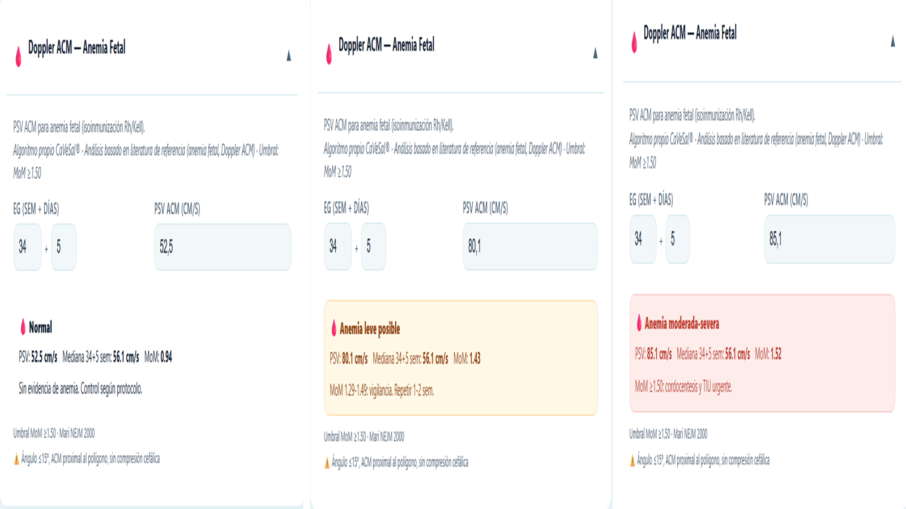
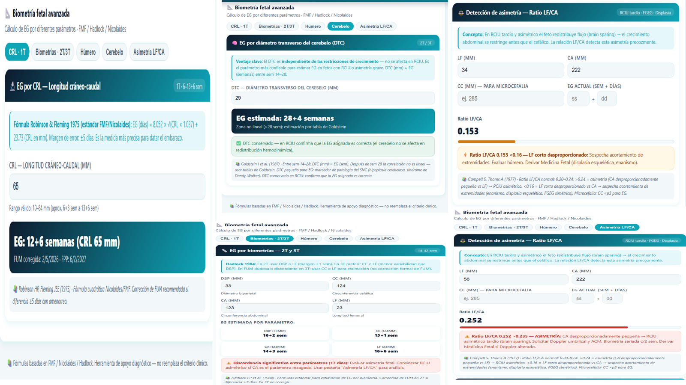
🧬 Perfil Biofísico Fetal (PBF)
Ref: Manning 1980 · Vintzileos 1983 · Clark 1989 · Queenan/Spong/Lockwood 7ª ed. · MSPyBS Paraguay
Elegí la modalidad según lo que hayas evaluado: Completo (Manning, 5 variables, 10 puntos + NST) · Ecográfico puro (8 puntos, sin NST) · Abreviado (Clark: NST + líquido amniótico) · Vintzileos (graduado 0/1/2 + grado placentario de Grannum, hasta 12 puntos).
Cargá las variables disponibles según la modalidad elegida: movimientos respiratorios fetales (MRF), movimientos corporales/de miembros (MCF), tono fetal, reactividad del NST, y volumen de líquido amniótico — en la modalidad Vintzileos, agregá también el grado placentario (Grannum).
Cargá la edad gestacional actual — es un dato clave: la conducta sugerida depende de la combinación puntaje × estado del líquido amniótico × EG, no solo del puntaje total.
La app suma el puntaje y muestra la conducta correspondiente, señalando además si el líquido amniótico está normal o disminuido, porque la conducta cambia según ese estado — en especial en los puntajes intermedios.
🔹 10/10 u 8/10 con líquido normal: manejo expectante, vigilancia habitual.
🔹 8/10 con oligoamnios: depende de la EG — ≥36–37 sem, finalizar; pretérmino, Doppler diario.
🔹 6/10 con líquido normal: reevaluar en 12–24h (o 2h según protocolo MSPyBS), o se indica la finalización si está en término.
🔹 6/10 con oligoamnios: interrupción si la viabilidad está asegurada.
🔹 4/10 con líquido normal: conducta EG-dependiente — si <32 sem, repetir en 2h junto con corticoides, sulfato de magnesio y Doppler de ductus venoso; cesárea solo si persiste o el Doppler se descompensa.
🔹 4/10 con líquido disminuido: cesárea de urgencia inmediata, independientemente de la EG (doble compromiso: asfixia aguda sobre insuficiencia crónica).
🔹 ≤2/10 (cualquier líquido): cesárea de urgencia inmediata, independientemente de EG o líquido.
img/manual-calc-pbf.png💓 Monitoreo Fetal (NST/CTG)
Ref: FIGO Consensus Guidelines (Ayres-de-Campos et al. 2015) · ACOG Practice Bulletin 229/106 · Caldeyro-Barcia R. et al. 1966 · Welt AM et al. 1984 · Dawes GS, Redman CWG et al. (Oxford)
Cargá la FCF basal (lpm) — la app alerta taquicardia si es >160 lpm o bradicardia si es <110 lpm (mismo criterio que el campo "Ritmo cardíaco" de la Morfología — Tórax y corazón).
Seleccioná la variabilidad: ausente, mínima, moderada o saltatoria.
Marcá la reactividad — el campo muestra como ayuda la regla correspondiente según la EG cargada: 15×15 (≥32 semanas) o 10×10 (<32 semanas).
Si identificás un patrón morfológico especial, elegilo del selector: sinusoidal clásico, pseudo-sinusoidal, ondas lambda, patrón omega, o Signo W.
Clasificá las desaceleraciones (Dips I/II/III, Caldeyro-Barcia) si están presentes.
Por separado, marcá si observás hombros (shoulders) u overshoot — son dos hallazgos distintos, cada uno con su propio campo.
img/manual-calc-monitoreo-fetal.png👤 Pacientes
Fichas guardadas, backup, y el puente de datos con la Historia Clínica CaVeSal®.
👤 Gestión de pacientes y backup
Desde la pestaña de Pacientes, tocá "Nueva paciente" para crear una ficha, o buscá una existente por documento.
Los datos que cargues en los módulos clínicos se guardan automáticamente dentro de la ficha de la paciente activa. Si marcaste reproducción asistida (TRA) en Embarazo actual, la app lo señala como hallazgo de riesgo (mayor riesgo de placenta previa, preeclampsia y gemelar).
Cada ficha muestra automáticamente la fórmula obstétrica (G/P/C/A: gestas, partos, cesáreas, abortos) calculada a partir de los antecedentes cargados, junto con talla/peso y la clasificación de riesgo global.
Historial de visitas: dentro de la ficha de la paciente, tocá "+ Visita" para registrar cada control prenatal con: fecha, EG (autocalculada desde la FUM), peso actual, PA, laboratorio (Hb, glucemia, TSH), ecografía (PFE + percentil, cervicometría, presentación fetal), Doppler/sFlt-1-PlGF en texto libre, observaciones/plan, y fecha de próxima cita.
Cada visita queda en un listado cronológico editable — podés modificar o eliminar cualquier visita cargada, y desde ahí también podés volver a abrir esa paciente directo en la calculadora ("⚡ Abrir en calculadora") para recalcular su riesgo con los datos actualizados.
Desde "Mis pacientes", tocá "Backup local (.json)" para descargar un archivo con todas tus pacientes (tarjeta "Descargar .json"), y guardalo en tu propio Google Drive (tarjeta "Abrir Google Drive") — así podés sincronizar entre PC, celular o tablet manualmente, copiando el archivo de un dispositivo a otro.
Para "Importar backup", elegí el archivo .json y el modo: "Combinar" (agrega las pacientes del backup sin borrar las que ya tenés) o "Reemplazar todo" (borra los datos actuales y los reemplaza por los del backup).
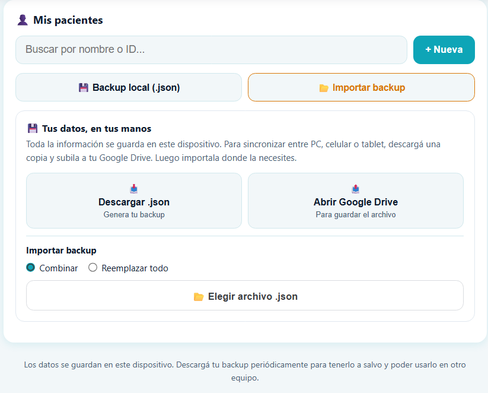
🔄 Sincronización con Historia Clínica CaVeSal®
Si también usás la Historia Clínica CaVeSal®, podés enviar los datos clínicos de una paciente directo desde ahí hacia la Calculadora, sin recargar nada a mano (botón "Enviar a Calculadora" en la HC — función de la versión completa). Esta sección explica qué pasa del lado de la Calculadora cuando esos datos llegan.
Reconocimiento automático por documento de HC (id_hc): la Calculadora identifica a la paciente por el campo "id_hc" que manda la Historia Clínica. Si ya la tenías guardada en "Mis pacientes" (porque la enviaste antes), actualiza esa misma ficha en vez de crear una duplicada — podés mandar la misma paciente desde HC todas las veces que haga falta, a medida que avanza el embarazo, sin generar fichas repetidas. Si no reconoce el id_hc (primera vez, o paciente sin documento cargado en HC), da de alta una ficha nueva.
Datos de perfil (talla, peso pregestacional, FUM, grupo y Rh, gestas/partos/cesáreas/abortos, nombre): si el campo todavía estaba vacío en la ficha de la Calculadora, se completa solo. Si ya tenía un valor distinto al que llega desde HC, la app no lo pisa a ciegas — aparece el modal "⚠️ Revisar datos que difieren", listando cada campo en conflicto para que elijas cuál valor se queda (el que ya tenías guardado o el que llega de HC).
Antecedentes, serologías y vacunas (HTA crónica, diabetes pregestacional, trombofilia, cardiopatía con clase OMS, VIH/Hepatitis/Sífilis antecedente, Coombs, VDRL, toxoplasmosis, Chagas, SGB, Tdpa/antigripal/VSR/COVID — lo que ya tengas cargado en HC): estos datos no se mezclan con los campos editables de "Editar paciente" — llegan de solo lectura, y se ven aparte en "Ver ficha", bajo el bloque "🩺 Datos clínicos vinculados desde HC". Solo se muestran los que tienen un valor positivo o cargado — no se lista cada antecedente que la paciente no tiene, para no saturar la ficha.
Datos de la visita actual (PA, peso, presentación fetal, Hb, TSH, cervicometría, Doppler, glucemia, PFE, observaciones): estos siempre se agregan como una visita nueva en el historial — nunca reemplazan una visita ya guardada. Se ven en la ficha exactamente igual que una visita cargada a mano, con los mismos campos descritos en el punto 4 de "Gestión de pacientes" arriba.
img/manual-calc-puente-hc.pngℹ️ Acerca
Ecosistema CaVeSal®, autor clínico, bases bibliográficas de toda la calculadora, y aviso legal. Esta pestaña no estaba documentada en el manual hasta ahora.
📲 Invitá a tu paciente
🆕 Sección nuevaDos apps gratuitas del ecosistema CaVeSal®, según el momento de cada paciente, más el ecosistema completo — con su QR para compartir en el momento de la consulta.
CaVeSal® Mamá (mama.cavesal.app): embarazo, parto, lactancia y desarrollo del bebé — para la paciente embarazada o puérpera.
CaVeSal® Mujer (mujer.cavesal.app): salud ginecológica y ciclo fuera del embarazo — para la paciente que no está cursando un embarazo.
Ecosistema CaVeSal® (cavesal.app): acceso a todas las apps del ecosistema, incluidas Historia Clínica y las que vayan sumándose.
👨⚕️ Autor clínico
🆕 Sección nuevaDr. Carlos Vera Salerno — Formación en Medicina Materno-Fetal. Metodología FMF/Nicolaides y guías: ACOG, FIGO, NICE, IADPSG, ATA, WHO, EBCOG, Medicina Fetal Barcelona.
Título de grado Médico y Cirujano (Paraguay) con homologación al título de grado español Licenciado en Medicina. Especialista en Ginecología y Obstetricia.
Postgrados en Ecografía General y Gineco-Obstétrica, Endocrinología Ginecológica y Reproductiva, Didáctica en Educación Superior y Salud Pública. Formación en Inteligencia Artificial y herramientas digitales emergentes aplicadas a la práctica profesional.
Capacitador Nacional en Salud Sexual y Reproductiva, Código Rojo y Atención Prenatal. Miembro del Comité Técnico Nacional de Inmunización (Paraguay).
Docente universitario de grado y posgrado en Ginecología y Obstetricia, Ecografía, Endocrinología Ginecológica y Reproductiva.
Miembro del Comité Científico de FLASOG (2024–2026). Miembro de sociedades científicas en Paraguay (FPGO, SOGON, SOGIA, SODIAP y SEGIRP). Presidente de la FPGO (2023–2026).
📚 Bases clínicas
🆕 Sección nuevaListado completo, por dominio clínico, de las fuentes que sustentan cada módulo de la Calculadora. Es la referencia que aparece dentro de la app en "Acerca → Bases clínicas" — útil para saber de un vistazo qué guía respalda cada cálculo antes de citarlo con un colega o una paciente.
Cribado cromosómico: FMF/Nicolaides · Snijders 1998 · Sharifzadeh 2019 · Kagan · Cicero.
Preeclampsia: FMF · ISSHP · Roche/BRAHMS (sFlt-1/PlGF) · Medicina Fetal Barcelona. Trastornos hipertensivos: ACOG PB No.222 (2020) · FIGO Guidelines (2019) · ISSHP (2021).
Diabetes gestacional: IADPSG 2010 · ADA 2026 · ALAD 2019 · OMS. Tiroides: ATA Guidelines 2017 · Endocrine Society · ACOG. Suplementación: OMS · ACOG · NICE · FIGO · Endocrine Society 2024 · EBCOG 2024 · Cochrane.
Biometría fetal: Hadlock 1984 · Robinson & Fleming 1975 (CRL/FUM) · Chitty & Altman 2002 (húmero) · Goldstein 1987 (cerebelo) · Jeanty 1983/1984 · Mayden 1982 · Chitty 1994 · INTERGROWTH-21st · Figueras & Gratacós 2008. Crecimiento fetal/PEG/RCIU: Figueras F. EJOGR 2008 · Protocolo MFB nov-2024 · ISUOG Delphi Consensus 2020.
Doppler AU/ACM/ICP: Ciobanu A et al. (FMF) UOG 2019. Doppler hemodinámico avanzado: Baschat AA 2011 · TRUFFLE Study Group UOG 2020 · ISUOG RCIU 2020 · Gratacós & Torres, protocolo MFB 2023. Arteria Oftálmica: Gyselaers 2020 · Verlohren 2012 · Kaitu'u-Lino 2018 · Medicina Fetal Barcelona.
Morfología fetal: ISUOG Practice Guidelines 2020/2023 (SNC, cara, corazón) · Paladini & Volpe 2018 · Jeanty/Mayden (diámetros orbitarios) · Corteville 1991/1992 (pelviectasia) · FMF/Nicolaides (megacistis/LUTO) · CDHSG/Jani 2007 (O/E LHR, HDC). Acretismo placentario: FIGO/Jauniaux 2018 · ISUOG/Jauniaux 2016-2018 · ACOG/SMFM Obstetric Care Consensus No.7.
Anemia fetal: Mari G. et al. NEJM 2000 (Doppler ACM/PSV) · Detti L et al. AJOG 2002. Gemelar monocorial/RCIU: Torres X 2017 · Gratacós E UOG 2007 · ISUOG 2020.
Perfil Biofísico Fetal: Manning 1980 · Vintzileos 1983 · Clark 1989 · Queenan/Spong/Lockwood 7ª ed. · MSPyBS Paraguay. Monitoreo Fetal (CTG): FIGO Consensus (Ayres-de-Campos 2015) · ACOG PB 229/106 · Caldeyro-Barcia 1966 · Welt 1984 · Dawes/Redman (Oxford).
Líquido amniótico: SMFM Consult #46 (2018) · ACOG Clinical Consensus No.3 (2022) · ISUOG 2024. Maduración pulmonar (<34 sem): ACOG PB 127 · RCOG Green-top 7. Neuroprotección MgSO₄ (<32 sem): ACOG PB 455 · OMS 2015.
Serologías: VIH — ETMI Plus Paraguay 2024 · DHHS 2024 · OPS · ACOG. Sífilis — CDC 2021 · OPS Eliminación TV 2024 · ETMI Plus 2024 · ACOG. Toxoplasmosis — SFMFM Consult Series · Montoya & Remington 2008 · OPS 2024. CMV — Rawlinson 2017 · Leruez-Ville 2020. Chagas — OPS 2023 · ETMI Plus 2024 · Torrico 2018. Hepatitis B — EASL 2017 · ACOG · ETMI Plus 2024. Hepatitis C — EASL 2020 · AASLD · ACOG. Rubéola — CDC · OPS · ACOG.
Colestasis intrahepática (CIE): Guía Perinatal MINSAL Chile 2015 · RCOG Green-top No.43 (2024) · SFMFM Consult Series No.53 · Williamson 2018 · Ovadia 2019 · ACOG · EASL.
Altura uterina: Algoritmo propio CaVeSal®, basado en Gomes AG RBGO 2001 · CLAP-OPS/OMS. Ganancia ponderal: IOM/NAS 2009 · ACOG. Vía de parto: Robson · Grobman (NICHD) · ACOG.
⚠️ Aviso legal
🆕 Sección nuevaCaVeSal® es una herramienta de apoyo clínico para profesionales de la salud capacitados. No reemplaza el juicio clínico del médico tratante ni la evaluación individualizada. Todas las decisiones clínicas son responsabilidad exclusiva del profesional de la salud.
Propiedad intelectual: CaVeSal® implementa algoritmos y fórmulas de cálculo propios, desarrollados e integrados de forma original a partir de las referencias bibliográficas citadas. Los coeficientes de regresión utilizados son originales, derivados de análisis propio de la literatura de referencia. No reproduce tablas con copyright de terceros. Las referencias a publicaciones científicas tienen fines exclusivos de atribución académica y validación clínica.
La mención de guías, sociedades científicas o instituciones (FMF, ACOG, FIGO, OMS, ALAD, ADA, IADPSG, CLAP, IOM, FPGO, FLASOG, entre otras) tiene fines exclusivamente de atribución bibliográfica. Ninguna de estas instituciones patrocina, avala ni certifica CaVeSal®.
🔗 Más recursos CaVeSal®
¿Ya tenés tu clave? ¿Querés conocer el resto de la suite?
¿Dudas sobre algún módulo? Escribinos a drverasalerno@gmail.com · Última actualización: octubre de 2026